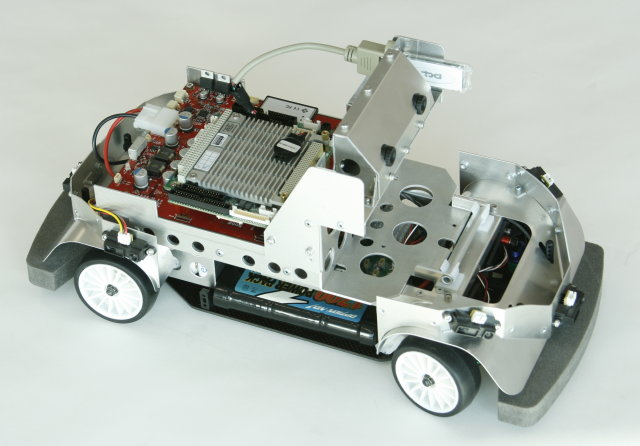
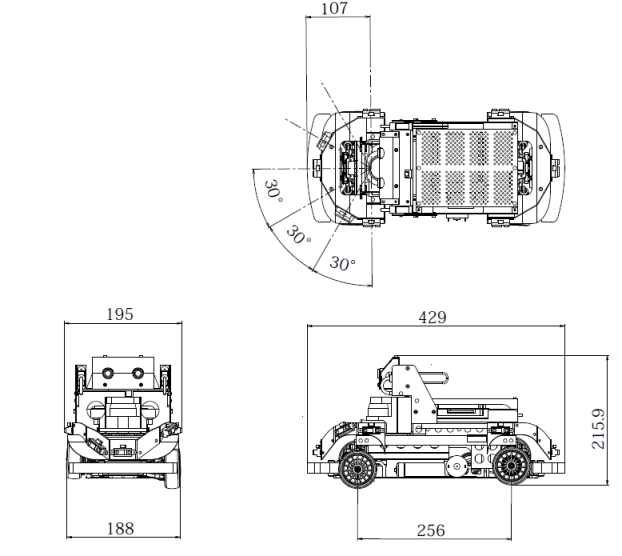
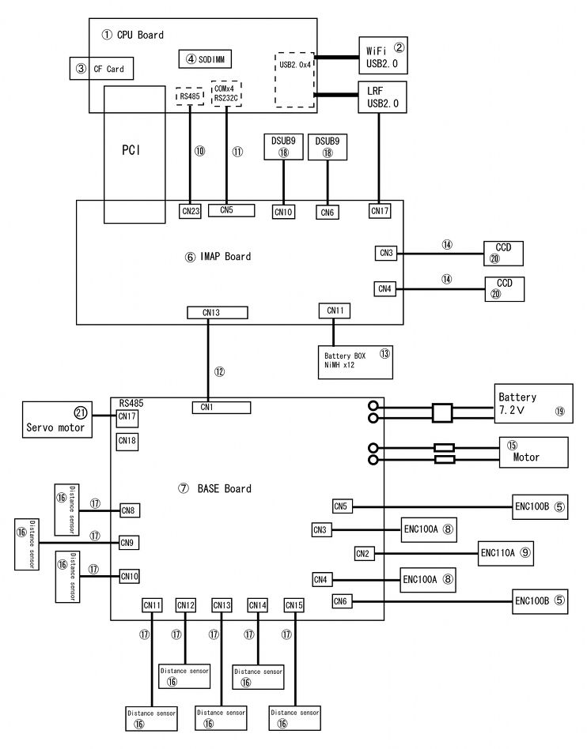
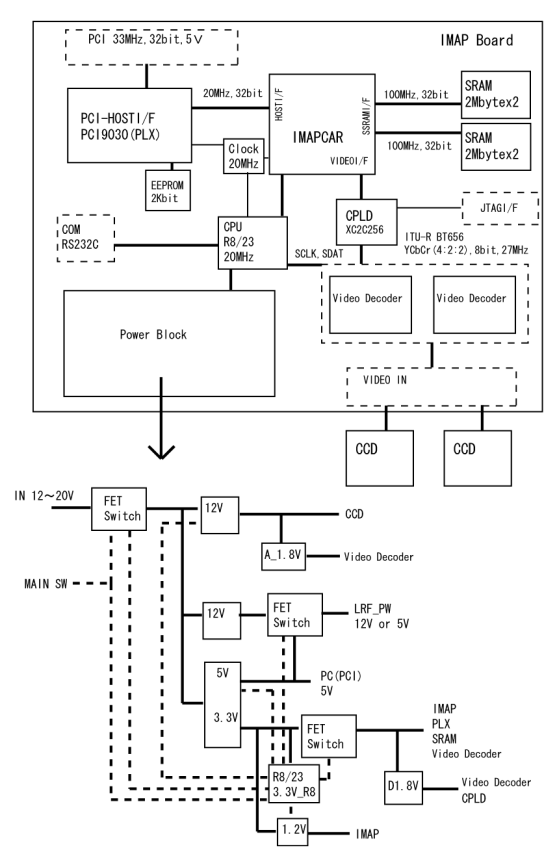
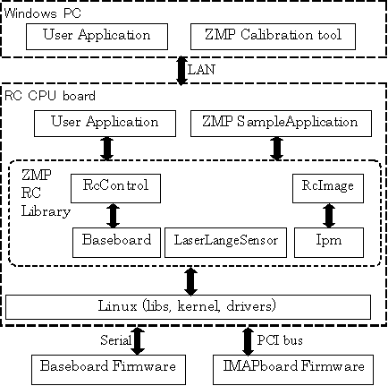

図: RoboCarの外観

図: RoboCarの外形
RoboCarエレキブロックダイアグラムを以下に示します。

図: RoboCar ブロック図
IMAPボードのブロックダイアグラムを以下に示します。

図: RoboCar IMAPボードブロック図
RoboCarは、ネットワーク越しにPCと通信して協調動作などを行うことができます。
CPUボードにはRTパッチを適用したLinuxが稼動しています。
IMAPボードではIMAPCARプロセッサがソフトウェアにより画像処理を行います。
BASEボードはセンサなどの情報を取得して、駆動用のモータをコントロール するファームウェアが動作しています。

図: ソフトウェアブロック図
別章で詳しく説明します。また、APIリファレンスが参考になります。
機能として、ステレオ視による障害物の検知と、白線の認識があります。 別章で詳しく説明します。
RoboCarから距離30cmから3m程度の範囲、水平角度約60度の範囲の物体までの 距離を測定し、その結果をさまざまな形で返します。
RoboCarの両側にある、約5cm幅の白線を左右どちらかのカメラで認識し その座標を返します。
以下の処理を行います。CPUとの通信はシリアル(RS232C)で行われ、 10[msec]毎にすべての情報をCPUに送信します。
16bitPWMによりFETのH-Bridgeを介してDCモータを駆動します。
モータ軸1箇所と、ホイールの4つの回転をロータリーエンコーダで 計測しています。カウント値は12bit分です。
ジャイロセンサからの入力をA/D変換で取得します。
加速度センサからの入力をA/D変換で取得します。
赤外線測定距離センサ8個分の値をA/D変換で取得します。
DCモータに流れる電流をモニタリングできます。
DCモータの回転速度をPID制御でコントロールします。